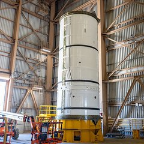
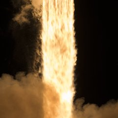
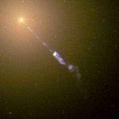
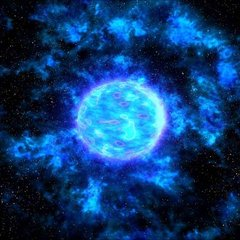
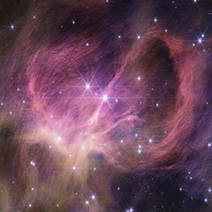

Điểm tin vũ trụ
12—18· 9 · 2026
5 tin
01
Tầng đẩy Artemis III gần xong
Hai tầng đẩy nhiên liệu rắn cao 54 m mỗi tầng, góp hơn 75% lực đẩy cho chuyến bay 2027.
NASA Kennedy · 15/9

02
Crew-13 vào cách ly
Bốn phi hành gia vào cách ly hôm 17/9, chờ phóng lên Trạm Vũ trụ đầu tháng 10.
NASA / SpaceX · 17/9

03
Ngưỡng phun tia của lỗ đen
Mọi lỗ đen đều phun tia khi tốc độ nuốt vật chất chạm 2% giới hạn Eddington — bất kể lớn nhỏ.
Nature · 17/9

04
Ngôi sao tái sinh đổi pha
Sakurai — ngôi sao "tái sinh" phát hiện năm 1996 — đang tiến vào pha giống sao Wolf-Rayet muộn.
MNRAS · 16/9

05
Sao lùn nâu nhẹ kỷ lục
Kính James Webb tìm ra sao lùn nâu chỉ nặng gấp 2 lần Mộc tinh, ở vùng IC 348 cách 1.000 năm ánh sáng.
NASA / JWST · 18/9

Đáng chú ý nhất
Sao lùn nâu nặng gấp 2 lần Mộc tinh
Chúng đẩy ranh giới giữa sao và hành tinh xuống thấp hơn nữa.
Còn bạn — tin nào đáng chú ý nhất tuần này?